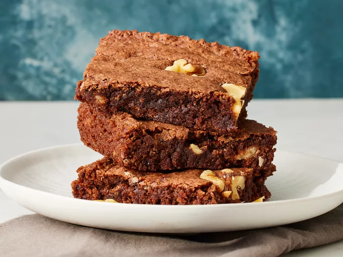

Chocolate Brownies

A quick and easy chocolate brownie recipe. This recipe serves 16 with a preparation time of 30 mins.
Ingredients:
- Baking spray, as needed
- 400 g white sugar
- 155 g plain flour
- 225 g unsalted butter, melted
- 4 large eggs, room temperature
- 50 g cocoa powder
- 1 tsp vanilla extract
- ½ tsp baking powder
- ½ tsp salt
- 60 g walnut halves
Steps
- Gather and measure all of your ingredients.
-
Preheat the oven to 175°C and lightly grease a
23x33 cm baking pan with baking spray.
-
Add the sugar, plain flour, melted butter, eggs, cocoa powder,
vanilla extract, baking powder and salt to a large bowl.
Whisk until everything is well combined.
-
Pour the brownie mixture into the prepared baking pan and
spread it out evenly.
-
Arrange the walnut halves over the top of the brownie mixture.
-
Bake for approximately 20-30 minutes. The brownies are ready
when the top looks crinkled and a toothpick inserted into the
centre comes out with a few moist crumbs.
-
Place the pan on a wire rack and allow the brownies to cool
completely before cutting them into squares.
Home